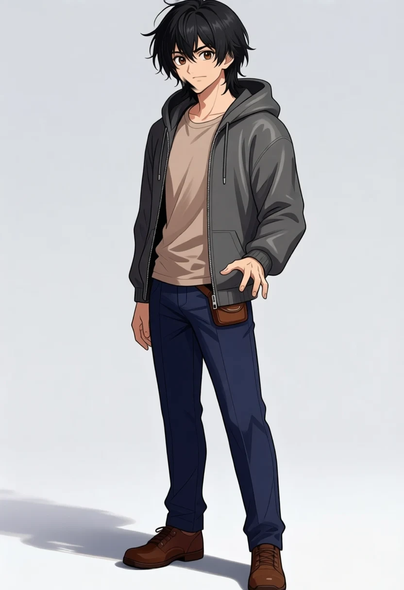

選べない召喚
外見も、種族も、人生も指定できない。通常《住民召喚》は一万個の石と引き換えに、未知の一人を迎える。
異世界ガチャ × 共同生活ダークファンタジー
～ガチャ沼に堕ちたら俺の負け～
引くか、耐えるか。
欲望で回るガチャの先に、
“人”の人生がある。

STORY
現代日本から異世界へ転移した黒瀬夜斗。彼が得た固有スキル《淫獄の王》は、欲望から生まれる《淫獄石》を使い、成人女性を《住民》として召喚する力だった。
けれど、召喚されるのは数字や駒ではない。異なる世界を生き、過去を抱え、自分の意思を持つ一人の人間だ。
ガチャを回したい。だが、沼には堕ちたくない。夜斗は召喚された住民たちと、未完成の王領域《淫獄》で暮らしを築いていく。
「残ることも、出ることも、
本人が決める」
KEY ELEMENTS
外見も、種族も、人生も指定できない。通常《住民召喚》は一万個の石と引き換えに、未知の一人を迎える。
《淫獄》は万能な楽園ではない。水も食料も暮らし方も、住民たちと一つずつ築いていく。
住民登録は忠誠や好意を与えない。残る、外へ出る、戻る。その選択は本人に委ねられる。
CHARACTERS
READ THE STORY
『小説家になろう』で本編を公開しています。第一話から最新話までお楽しみいただけます。
NEWS
『このやば』公式サイトを公開しました。